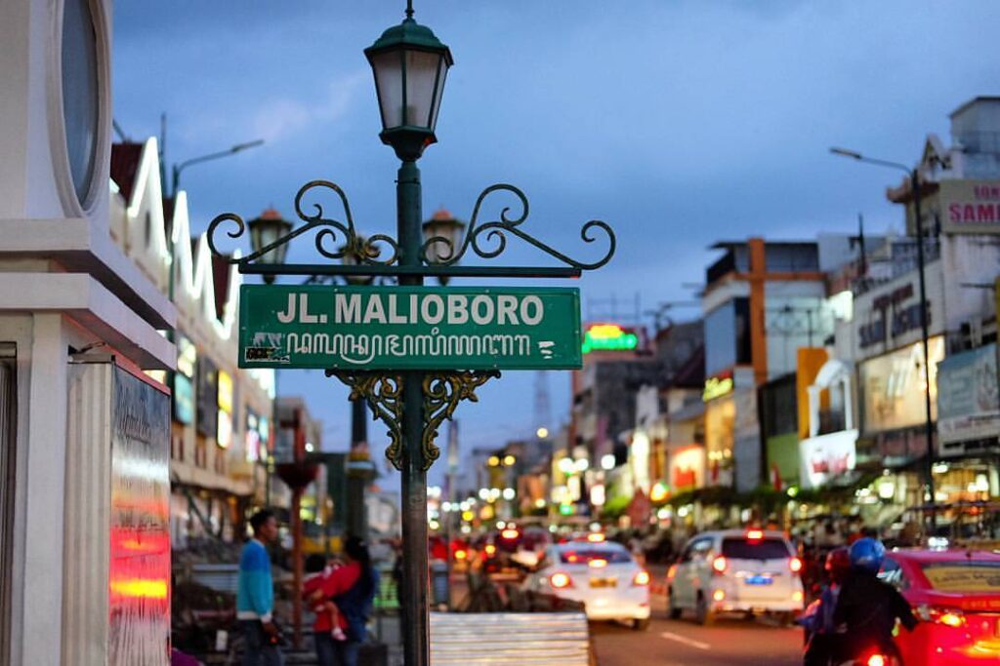
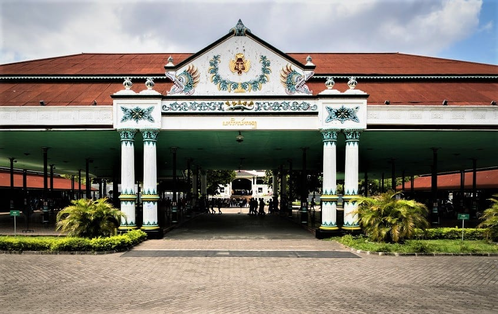

Analisis Geospasial Wilayah Kota Yogyakarta Tahun 2025
Eksplorasi Peta
Konteks keruangan dan demografis yang menjadi landasan analisis pemetaan kawasan.
Kota Yogyakarta merupakan wilayah perkotaan di Provinsi Daerah Istimewa Yogyakarta yang memiliki luas relatif kecil dibandingkan kabupaten di sekitarnya. Wilayah ini didominasi oleh penggunaan lahan terbangun, seperti permukiman, fasilitas pendidikan, perdagangan, dan jasa. Sebagai pusat aktivitas pemerintahan, pendidikan, dan ekonomi, Kota Yogyakarta memiliki tingkat mobilitas penduduk yang tinggi, baik dari penduduk tetap maupun pendatang. Kondisi tersebut berpengaruh terhadap pola persebaran penduduk yang cenderung terkonsentrasi pada wilayah tertentu.
Kepadatan penduduk di Kota Yogyakarta tergolong tinggi jika dibandingkan dengan wilayah lain di Daerah Istimewa Yogyakarta. Persebarannya tidak merata, di mana beberapa kecamatan menunjukkan tingkat kepadatan yang lebih tinggi dibandingkan kecamatan lainnya. Perbedaan ini umumnya dipengaruhi oleh faktor ketersediaan lahan, fungsi kawasan, serta kedekatan dengan pusat aktivitas seperti kawasan pendidikan dan perdagangan. Oleh karena itu, analisis kepadatan penduduk menjadi penting untuk memahami tekanan terhadap ruang dan kebutuhan pelayanan di masing-masing wilayah.
Fasilitas umum di Kota Yogyakarta meliputi berbagai sarana pelayanan seperti pendidikan, kesehatan, pemerintahan, dan fasilitas sosial lainnya. Secara umum, fasilitas tersebut tersebar di seluruh wilayah kota, namun tingkat ketersediaannya dapat berbeda antar kecamatan. Analisis persebaran fasilitas umum diperlukan untuk mengetahui sejauh mana fasilitas tersebut dapat menjangkau penduduk, terutama pada wilayah dengan kepadatan tinggi. Informasi ini penting sebagai dasar dalam mendukung perencanaan wilayah dan peningkatan pelayanan publik yang lebih merata.
Secara administratif, Kota Yogyakarta terbagi menjadi 14 Kemantren (Kecamatan) dan 45 Kelurahan sebagai berikut:
Sebagian sebaran fasilitas pendidikan jenjang SMA di Kota Yogyakarta meliputi:
Titik Pos Polisi (Pos Pol) yang terdata dalam peta tersebar di 27 lokasi strategis, yaitu:
Fasilitas kesehatan rujukan tingkat lanjut di Kota Yogyakarta yang terdapat dalam atribut peta meliputi:
Bangunan dan kawasan warisan budaya yang dilindungi dalam atribut peta meliputi:

Pusat Perdagangan

Pusat Sejarah
Ikon Kota
Program Studi Teknologi Survei dan Pemetaan Dasar
Sekolah Vokasi, Universitas Gadjah Mada
Fokus pada analisis geospasial dan pengembangan sistem informasi geografis berbasis web.